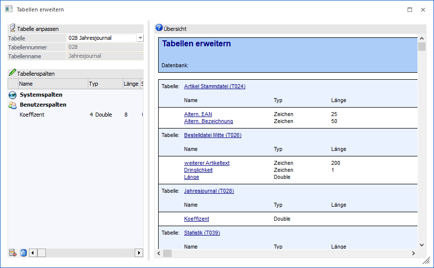
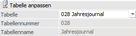
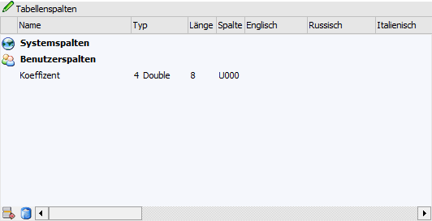
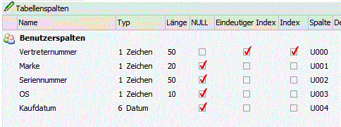
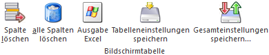
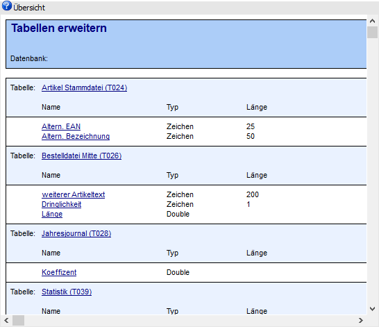

Über den Menüpunkt
1 WinLine ADMIN
1 System
1 Tabellen erweitern
können sowohl neue benutzerdefinierten Spalten in bestehenden WinLine-Tabellen als auch neue benutzerdefinierte Tabellen in der Mandanten-Datenbank angelegt werden. Folgende Punkte sind hierbei zu beachten:
ü Diese Funktion kann nur mit einer MDP-Developer-Lizenz genutzt werden, die ausschließlich MDP-Vertriebspartnern zur Verfügung steht. Für den Betrieb der vorgenommenen Erweiterungen in der WinLine ist eine MDP-Runtime-Lizenz in der Kundenlizenz erforderlich, die beim MDP-Vertriebspartner angefordert werden kann.
ü Die benutzerdefinierten Tabellen und Spalten werden beim Speichern der Einstellungen in allen Mandanten eingerichtet, die im Fenster "Datenbank Verbindungen" hinterlegt sind. D.h. die Einstellungen gelten immer für alle Mandanten die im System zur Verfügung stehen.
ü Anpassungen können nur vorgenommen werden, wenn keine Benutzer in der WinLine eingeloggt sind!
ü Es sind maximal 50 neue Spalten pro Tabelle möglich.
ü Erweiterungen für die Tabelle "T324 - Produktionslauf" werden nicht unterstützt!
ü Wenn Tabellenerweiterungen für das Personenkonto durchgeführt werden sollen, so können diese an der Tabelle T051 oder T055 erfolgen, nicht aber an der T054, weil diese gesondert behandelt wird.
Hinweis
Sollen die Erweiterungen auch in WinLine Tabellen eingebunden werden, so ist darauf zu achten, das maximal 150 Spalten pro Tabelle verwaltet werden können. D.h. stellt die WinLine in einer Tabelle bereits 135 Spalten dar, so können maximal 15 eigenen Spalten eingebunden werden.

Tabellen anpassen

Ø Tabelle
Es stehen alle Tabellen aus der WinLine Mandantendatenbank an dieser Stelle zur Verfügung. Zusätzlich kann mit dem Eintrag "000 - neuer Eintrag" eine eigene neue Tabelle in der WinLine Mandantendatenbank definiert werden.
Hinweis
Wenn die T025 um benutzerdefinierten Spalten erweitert wird, so steht die "Belege parken" Funktion beim "Belege erfassen" nicht zur Verfügung, d.h. die Buttons "Neu" und "Laden" sind im "Belege erfassen" deaktiviert.
Sollte die Tabelle T026 um benutzerdefinierten Spalten erweitert werden, so kann die "Belege parken" Funktion verwendet werden, sobald im MDP-Fensterskript die benutzerdefinierten Tabellenspalten sowohl in der Fenstertabelle ID300 als auch in der internen Tabelle (ID 301) hinzufügt werden (AddColumn-Methode).
Achtung
Erweiterungen für die Tabelle "T324 - Produktionslauf" werden nicht unterstützt!
Ø Tabellennummer
Wenn eine bestehende WinLine Tabelle selektiert wurde, so wird die entsprechende Tabellennummer in diesem Feld als Info angezeigt. Bei der Definition von einer neuen Tabelle kann eine neue Tabellennummer zwischen 650 und 700 vergeben werden.
Ø Tabellenname
Wenn eine bestehende WinLine Tabelle selektiert wurde, so wird der entsprechende Tabellenname in diesem Feld als Info angezeigt. Bei der Definition von einer neuen Tabelle kann ein neuer Tabellenname vergeben werden.
Tabellen "Tabellenspalten"

Die Tabelle enthält zwei Arten von Informationen:
ü Systemspalten
Im Bereich
"Systemspalten" stehen die Standard-Tabellenspalten als Information zur
Verfügung. Per Doppelklick auf die Zeile "Systemspalten" können diese ein- bzw.
ausgeblendet werden.
ü Benutzerspalten
Im Bereich
"Benutzerspalten" können neue benutzerdefinierte Spalten in der Tabelle angelegt
bzw. editiert werden. Um eine neue Tabellenspalte zu definieren, kann einfach in
die nächste freie Zeile geklickt werden.
Bei der Definition von einer neuen Spalte stehen folgende Felder / Spalten zur Verfügung:
Ø Name
An dieser Stelle wird der Name der Spalte hinterlegt. Dieser muss eindeutig sein, darf sich also in den weiteren Spalten der Tabelle nicht wiederholen.
Ø Typ
Definition des Typs der Spalte. Es stehen die Einstellungen "1 - Zeichen", "2 - Integer", "4 - Double", "6 - Datum" und "7 - Memo" zur Verfügung.
Ø Länge
Je nach Spaltentyp kann hier die Feldlänge der Spalte hinterlegt werden.
Ø Spalte
Die Nummer der neuen Spalte wird automatisch vom System vergeben. Benutzerdefinierte Spalte beginnen immer mit "U" (U000, U001, usw.).
Ø Sprachen 1 bis 20
In diesen Spalten kann die Bezeichnung für die neue Tabellenspalte hier hinterlegt werden.
Ø Neue Tabelle
Bei neuen Tabellen stehen 3 zusätzlich Spaltendefinitionen-Felder zur Verfügung:

ü NULL
ü Eindeutiger Index
ü Index
Tabellenbuttons

Ø Spalte löschen
Durch Anwahl dieses Buttons wird die markierte Zeile entfernt. Die Löschung der Spalte findet beim endgültigen Speichern statt.
Ø alle Spalten löschen
Mit Hilfe dieses Buttons werden alle Spalte der ausgewählten Tabelle entfernt. Die Löschung der Spalten findet beim endgültigen Speichern statt.
Ø Ausgabe Excel
Durch Anwahl des Buttons "Ausgabe Excel" wird der Inhalt der Tabelle nach Microsoft Excel übergeben.
Ø Tabelleneinstellungen speichern
Die Spalten einer Tabelle können grundsätzlich an beliebige Positionen verschoben, bzw. in der Breite entsprechend angepasst werden. Durch Anwahl des Buttons "Tabelleneinstellungen speichern" werden die Einstellungen benutzerspezifisch gespeichert und bei dem nächsten Aufruf des Programmpunktes wieder vorgeschlagen.
Ø Gesamteinstellungen speichern
Im Gegensatz zu "Tabelleneinstellungen speichern" können mit "Gesamteinstellungen speichern" mehrere Tabellenaufbauten gespeichert und nach Wunsch geladen werden. Zusätzlich werden Sonderfunktionen der Tabelle (z.B. "Spalte gruppieren") ebenfalls bei der Speicherung bedacht.
Übersicht

In diesem Info-Bereich werden alle benutzerdefinierte Tabellen bzw. Spalten übersichtlich angeführt.
Mit einem Klick auf eine Drilldown-Bezeichnung für eine bestimmte Tabelle bzw. Spalte werden die entsprechenden Einstellungen in der Tabelle "Tabellenspalten" geladen.
Buttons
Ø Ok
Durch Anwahl des Buttons "Ok" bzw. der Taste F5 werden alle vorgenommen Änderungen gespeichert.
Ø Ende
Durch Anklicken des Buttons "Ende" bzw. der Taste ESC wird das Fenster geschlossen und alle vorgenommenen Änderungen verworfen.
Ø Tabelle löschen
Mit Hilfe dieses Buttons kann eine selbst erstellte Tabelle gelöscht werden.
Ø alle Anpassungen entfernen
Durch Anwahl dieses Buttons werden alle Anpassungen (eigene Tabellen und neue Spalten) nach einer Sicherheitsabfrage direkt gelöscht.
Ø Übersicht drucken
Mit Hilfe dieses Buttons wird die Info aus dem Bereich "Übersicht" auf den Drucker ausgegeben.
Ø Anpassungen in MDP speichern
Durch Anwahl dieses Buttons können alle Anpassungen in eine "Mesonic MDP Project"-Datei (MDP) gespeichert werden.
Ø Anpassungen aus MDP laden
Durch Anwahl dieses Buttons können die Anpassungen aus einer "Mesonic MDP Project"-Datei (MDP) geladen werden.
Ø VCR-Buttons
Über die so genannten VCR-Buttons kann durch Mausklick zwischen den Seiten des Bereichs "Übersicht" geblättert werden.
ü  Damit kann die erste Seite angesprochen werden.
Damit kann die erste Seite angesprochen werden.
ü  Damit kann die vorherige Seite angesprochen werden.
Damit kann die vorherige Seite angesprochen werden.
ü  Damit kann die nächste Seite angesprochen werden.
Damit kann die nächste Seite angesprochen werden.
ü  Damit kann die letzte Seite angesprochen werden.
Damit kann die letzte Seite angesprochen werden.